Aujourd'hui on est à OVH Cloud dans le data center de Beauharnau au Canada, un des plus gros data center d'Amérique du Nord. Et on va tout voir de leur nouvelle génération de serveurs, de l'installation au watercooling, à l'alimentation électrique, au réseau, à la destruction des serveurs, ici dans leur super gros mega data center à Montréal. Toutes les pièces, donc tout ce qui va être assemblé dans les serveurs, elles vont rentrer par cette boîte ici.
Interface & Outils : AUCUNE
Contenu textuel & Code : AUCUNE
Action / Démonstration : Présentation d'introduction du datacenter OVH Cloud de Beauharnois par le créateur.
Ensuite elles vont être rangées dans toutes les différentes étagères pour être stockées, ou alors dans cette étagère un petit peu robotique pour pouvoir optimiser au maximum l'espace. Donc du coup OVH ils ont un partenaire qui leur fait toute la métallurgie, donc qui fait tous les racks dans lesquels on va pouvoir mettre les serveurs. Et donc, ils arrivent tout nus comme ça. Et ensuite, en fonction des besoins qu'il va y avoir en ce moment, s'il y a besoin de gros serveurs, de petits serveurs, eh bien on va venir mettre les petites ailettes ici qui vont permettre d'héberger soit des serveurs de une unité, soit de deux unités ou plus en fonction si on a besoin d'un gros serveur ou d'un tout petit mini serveur. Une fois qu'on a fini l'assemblage physique du rack, il va ressembler à ça où on a
Interface & Outils : Équipement matériel et racks de datacenter physiques.
Contenu textuel & Code : Manipulation de matériel serveur et racks métalliques industriels.
Action / Démonstration : Présentation du processus de stockage et de la structure physique des racks de serveurs chez le partenaire d'OVH.
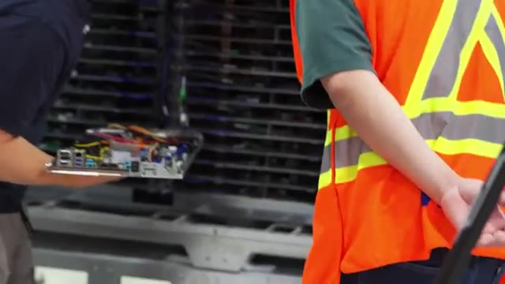
🔍 Zoomle réseau, l'électricité et toute la plomberie pour le refroidissement à l'eau. Ça, c'est la configuration la plus dense possible, on peut mettre 96 serveurs parce que c'est des serveurs qui font la moitié d'une unité. Donc ça c'est une unité, une unité, une unité, une unité. C'est l'espace normal pour mettre un serveur sauf que comme on voit ici, il y a une petite séparation, ce qui fait qu'en fait dans une seule unité normale, on peut mettre jusqu'à deux serveurs. Du coup, c'est des petits serveurs qui ressemblent à ça, qui prennent la moitié de la place, qui sont beaucoup plus petits, ce qui fait qu'on peut avoir un rack beaucoup plus dense, beaucoup plus de serveurs au même endroit en utilisant moins de place. Une fois que l'assemblage ici est fait, il y a toute une partie de tests évidemment pour vérifier que la plomberie résiste
Interface & Outils : Matériel physique (serveurs rackables, carte mère propriétaire demi-U).
Contenu textuel & Code : Architecture matérielle serveur : socket CPU AMD EPYC, emplacements mémoire DDR5, connecteurs d'alimentation et câblage interne.
Action / Démonstration : Présentation physique et détaillée d'un serveur haute densité au format demi-unité (0.5U) et de ses composants internes.
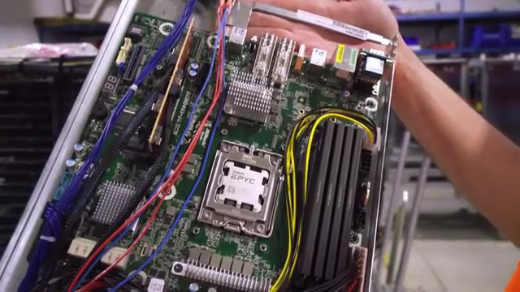
🔍 Zoombien la pression, que tout est bien branché, etc. On va passer à une partie où on va hacker tous les serveurs, mettre les 96 serveurs dedans. Pour la partie réseau, on a trois switches en haut et les trois switches ont une fonction un petit peu différente. On va avoir un switch qui va permettre la connectivité à Internet pour pouvoir accéder à mon serveur. On va avoir un deuxième switch qui va être un petit peu virtuel et qui va permettre de configurer le réseau un peu comme on veut, ce qui fait que si on a un serveur à Montréal et un autre serveur à Paris, on peut configurer le réseau pour faire comme si les deux étaient exactement dans le même sous-réseau alors qu'ils sont à l'autre bout du monde.
Interface & Outils : Matériel réseau physique (panneau de brassage, câblage structuré, switchs).
Contenu textuel & Code : Connectique réseau dense avec câbles à paires torsadées et étiquettes de repérage.
Action / Démonstration : Explication de l'architecture réseau et du rôle des différents switchs pour la connectivité des 96 serveurs.
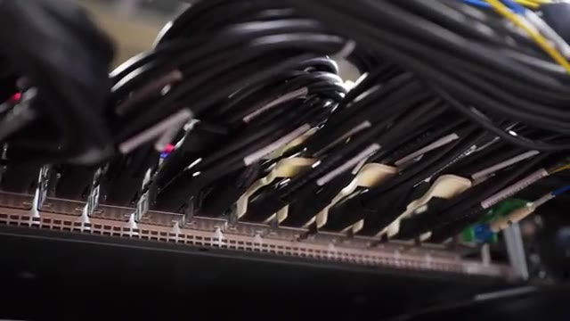
🔍 ZoomDonc, c'est quand même assez pratique. Et le troisième switch, c'est l'IPMI. Donc, c'est pour pouvoir se connecter au serveur en cas de problème, si jamais il répond plus, s'il est freeze, s'il faut rebooter le serveur. Et bien, ce switch-là permet de faire toutes ces opérations de maintenance sur le serveur. Et ce qui est intéressant aussi, c'est que le switch pour l'accès au public et le switch virtuel, et bien, ils peuvent échanger.
Interface & Outils : Matériel réseau physique (panneau de brassage, câbles RJ45/fibre, switch).
Contenu textuel & Code : Connectique réseau et câblage structuré dans un rack de serveurs.
Action / Démonstration : Présentation matérielle du switch réseau et de la connectivité IPMI pour la maintenance à distance.
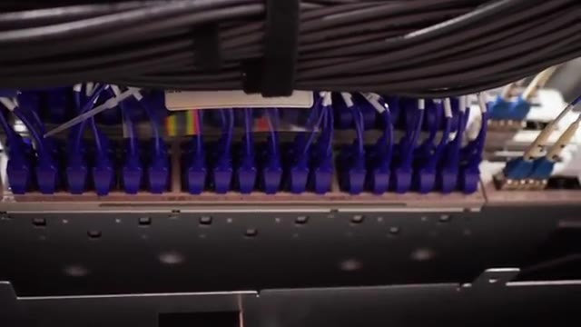
🔍 ZoomÇa veut dire que si jamais le switch qui donne accès à Internet tombe en panne, et bien, le switch virtuel peut prendre le relais et donner une connectivité Internet à tous les autres switches. Ensuite en parlant de redondance, chaque switch va avoir 2 x 25 gigues en connectivité en SFP. Le switch ici va donner en général 10 gigas de connectivité vers internet, mais si jamais on a des demandes spéciales, on peut potentiellement avoir jusqu'à 2 x 25 gigues en connectivité locale. Et le troisième câble ici, ça va être notre IPMI pour pouvoir accéder à notre machine à distance en cas de problème. Ensuite pour la partie alimentation, les serveurs, on voit qu'ils n'ont pas l'alimentation directement ici. Ils ont juste la connexion ici,
Interface & Outils : AUCUNE
Contenu textuel & Code : AUCUNE
Action / Démonstration : Explication orale de la redondance réseau et de la connectivité SFP entre switches.
je m'imagine que c'est une connexion ATX. Et ils vont se connecter directement au fond du rack et c'est dans le rack qu'il y a déjà les alimentations qui sont déjà préinstallées. Donc là pour la partie alimentation électrique, on voit on a toutes les alimes qui sont derrière pour pouvoir alimenter tous les serveurs. Là comme ça va être que des machines qui sont un peu plus entrée de gamme, on va avoir une alimentation qui peut alimenter jusqu'à quatre machines différentes. Donc c'est des alimentations de 1200 watts donc elles ont largement la puissance pour pouvoir faire ça.
Interface & Outils : Matériel physique, infrastructure de datacenter / rack serveur modulaire.
Contenu textuel & Code : Connectique d'alimentation interne et structure modulaire des serveurs en rack. [DESC_IMAGE_1] Explication de l'architecture d'alimentation électrique centralisée et de la connexion ATX au fond du rack.
Action / Démonstration : Démonstration pédagogique et mise en perspective technique.
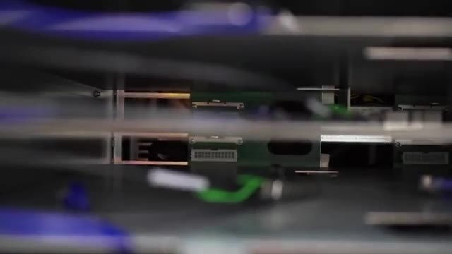
🔍 Zoom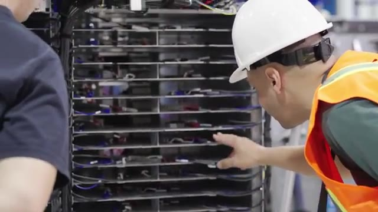
🔍 ZoomEt ensuite on va avoir la partie refroidissement. Donc c'est ça toute la plomberie qu'on voit ici. On va avoir de l'eau fraîche qui va rentrer dans le rack et qui va aller, par tous ces petits tuyaux, aller refroidir individuellement tous les 96 serveurs qui sont dans le rack. Et l'eau, elle refroidit à peu près 80% de la chaleur que fournit le CPU. Et un 20% qui reste, qui est produit par le CPU, mais aussi les autres composants, la carte réseau, la RAM, les disques durs, etc., qui va être refroidi par air.
Interface & Outils : Matériel physique de datacenter (rack de serveurs haute densité, système de refroidissement liquide par tuyauterie).
Contenu textuel & Code : Architecture matérielle d'un rack contenant 96 serveurs équipés de watercooling.
Action / Démonstration : Explication et démonstration du système de refroidissement liquide (plomberie et tuyaux d'eau fraîche) pour dissiper la chaleur des serveurs.
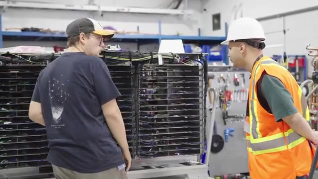
🔍 ZoomDonc c'est pour ça qu'on va aussi avoir de l'eau qui va circuler dans ce gros, gros radiateur ici. Et on va avoir tous ces ventilateurs qui vont prendre l'air chaud qui est généré par le reste des composants. et le faire passer à travers cette eau froide ici. Et ça, c'est une des grosses innovations d'OVH qui font qu'ils n'ont pas forcément besoin de climatiser les bâtiments, de climatiser les conteneurs qu'on va voir juste après dans lesquels ils mettent les serveurs, parce que l'air qui ressort des racks est à température normale.
Interface & Outils : Matériel hardware datacenter / système de refroidissement liquide OVH
Contenu textuel & Code : Racks de serveurs, échangeur thermique, tuyauterie de refroidissement liquide, ventilateurs
Action / Démonstration : Explication technique du système de refroidissement par eau (watercooling) et ventilation des serveurs OVH
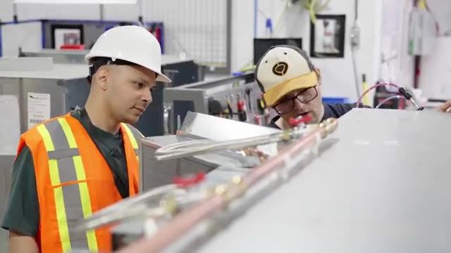
🔍 Zoom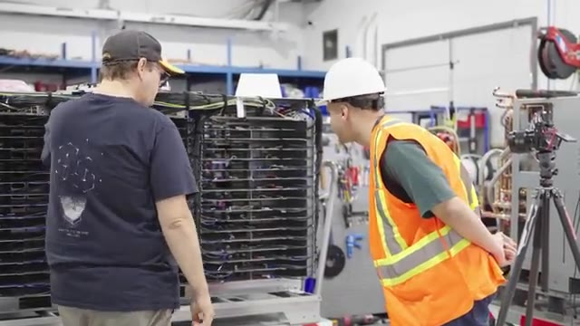
🔍 ZoomDonc il n'y a pas besoin de refroidissement supplémentaire, il n'y a pas besoin de rajouter de climatisation, etc. Donc là, on va préparer un GPU, un RTX 2000, qui correspond à peu près à une 40-60 en GPU classique, sauf que là, ce n'est pas pour faire du gaming, c'est plus pour des utilisations plus professionnelles, comme de l'IA ou des autres utilisations qui ont besoin de GPU. Sauf que comme on va faire du refroidissement en liquide, à OVH, ils vont les customiser pour pouvoir les faire entrer dans leur serveur.
Interface & Outils : Atelier technique avec plan de travail, boîtes de rangement de composants et écran de contrôle en arrière-plan.
Contenu textuel & Code : Manipulation physique d'une carte graphique professionnelle (GPU RTX 2000).
Action / Démonstration : Présentation matérielle et explication des usages professionnels (IA) d'un GPU RTX 2000.
Premièrement, on va le démonter. On va enlever les petites vis de derrière. On va perdre la garantie, évidemment. On va venir ensuite enlever le radiateur pour pouvoir après faire l'installation d'un waterblock. OK, une moyenne goutte. Comme ça ? Parfait. Ça a l'air bien appliqué.
Interface & Outils : Atelier technique avec établi, bacs de rangement de composants et écran de contrôle.
Contenu textuel & Code : Manipulation physique de matériel informatique, application de pâte thermique sur un circuit imprimé (PCB).
Action / Démonstration : Application précise de pâte thermique sur un processeur ou une puce électronique avant l'installation d'un waterblock.
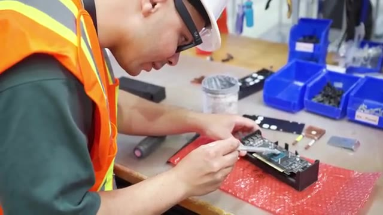
🔍 ZoomC'est bon, je suis embauché ? Oui ! C'est un petit oui. Si on regarde comme il faut, c'est vraiment ici pour mettre sur les chipsets. On va remettre encore de la pâte thermique. OK. Cette fois-ci, une grosse goutte, j'imagine? Oui. Après, il y a une bonne... T'en as beaucoup, là. Ouais. Mais moi, je suis comme ça, je suis généreux.
Interface & Outils : Écran de contrôle/suivi d'atelier et poste de travail physique.
Contenu textuel & Code : Composants matériels, cartes électroniques (PCB), pots de pâte thermique, outillage de précision et bacs de quincaillerie.
Action / Démonstration : Application manuelle de pâte thermique sur des composants matériels et contrôle visuel de l'assemblage.
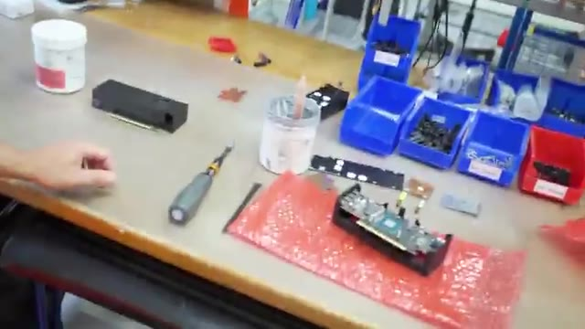
🔍 Zoom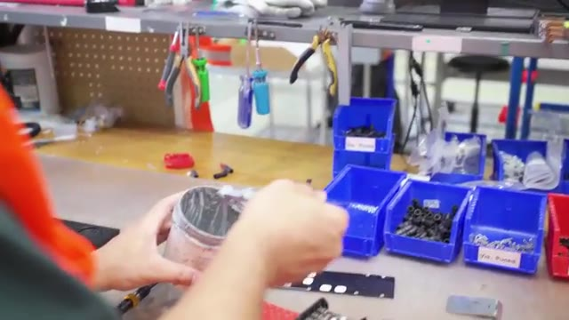
🔍 ZoomIl n'y a pas de problème. Ça déborde, on va nettoyer. Yep. On vient remettre le backplane. Donc là, ici, on a une grosse, grosse machine. Les GPU qu'on a vus tout à l'heure.
Interface & Outils : Matériel informatique, outillage de précision et composants électroniques (GPU / cartes d'accélération).
Contenu textuel & Code : Manipulation physique de matériel, application de pâte thermique et assemblage de backplane/dissipateur thermique.
Action / Démonstration : Maintenance matérielle, nettoyage et réassemblage d'un composant de serveur haute performance.
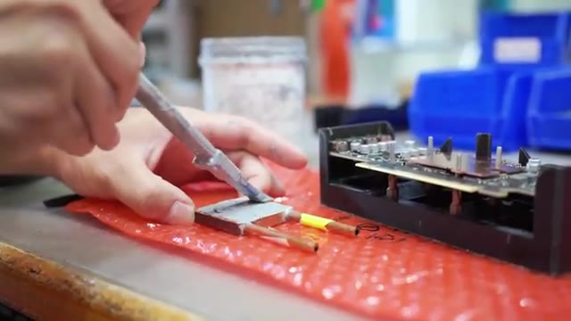
🔍 Zoom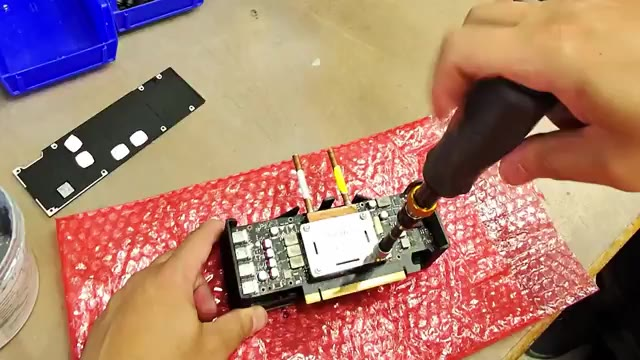
🔍 ZoomIci, on va retrouver 1, 2, 3, 4, 5, 6, 7, 8 fois des RTX 2000 qui vont être tout ça dans un serveur seulement 2U. Et à l'intérieur, dans la machine ici, on va avoir un Epic 16 coeurs avec 1TB de RAM, donc quand même assez costaud aussi, et 2TB de disque dur, prodondé, c'est juste pour avoir l'OS.
Interface & Outils : Matériel serveur rackable 2U, composants internes (CPU EPYC, RAM, cartes graphiques RTX 2000, watercooling).
Contenu textuel & Code : Architecture matérielle haute densité : serveur 2U, processeur EPYC 16 cœurs, 1 To de RAM, stockage NVMe M.2 et 8 GPU RTX 2000 intégrés.
Action / Démonstration : Présentation physique et démontage du châssis serveur 2U pour exposer la disposition interne des composants haute performance.
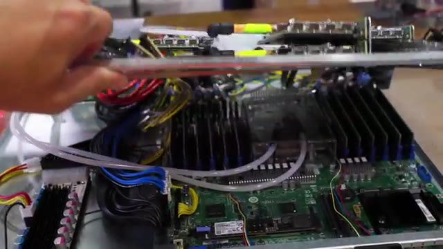
🔍 ZoomJ'imagine que si on utilise autant de GPU, on va utiliser comme un NAS ou un SAS ou un stockage qui est déporté, qui ne va pas être directement dans le serveur. Et donc, on va faire notre petite installation ici. Évidemment, il a déjà été un petit peu fait pour moi. On va faire notre petit ajout de GPU ici. On va venir faire ça ici. Tac.
Interface & Outils : Aucune interface logicielle ou console visible (plans vidéo face-caméra/atelier).
Contenu textuel & Code : Aucun code, commande, architecture ou métrique affiché à l'écran.
Action / Démonstration : Explication orale sur l'infrastructure de stockage déportée (NAS/SAS) et manipulation physique générique de matériel informatique.
Et là, on a toutes les ports PCI Express qui sont tous déportés, qui viennent ici se reconnecter derrière dans la carte mère. Et donc, un GPU, ça consomme déjà beaucoup d'énergie. Mais là, quand on en a huit dans le même serveur, ça consomme encore plus. Donc, on a notre alimentation ici, 2500 watts d'alimentation qui va alimenter premièrement notre serveur, mais qui va aussi alimenter directement les risers PCI Express qui vont te permettre d'alimenter après derrière les GPU.
Interface & Outils : Matériel physique (serveur haute densité, blocs d'alimentation, câblage interne).
Contenu textuel & Code : Composants matériels de serveurs IA (ports PCIe déportés, alimentation haute capacité, watercooling).
Action / Démonstration : Explication technique sur l'alimentation électrique et le routage des ports PCIe pour les GPU dans un serveur haute densité.
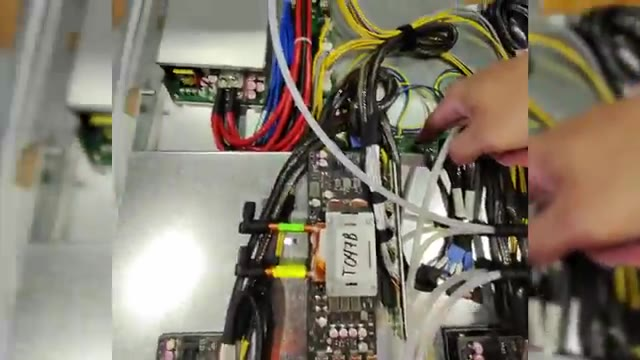
🔍 ZoomEt ces risers PCI Express qu'on voit ici, c'est aussi des cartes custom faites directement par OVH. Et ensuite, les risers vont être branchés en mini-sass vers la carte mère. Pour la carte mère, elle va voir ça comme un périphérique PCI Express et donc elle va voir la carte graphique comme si elle était branchée en PCI Express alors qu'on l'a déportée via un câble. On a aussi une carte ici qui permet de vérifier qu'on n'a pas d'humidité dans le châssis et pour pouvoir venir couper l'alimentation en cas de problème.
Interface & Outils : Matériel informatique serveur, carte mère, connectique interne.
Contenu textuel & Code : Composants matériels de serveur OVH (carte mère, SSD NVMe, connecteurs internes).
Action / Démonstration : Présentation matérielle des composants internes d'un serveur personnalisé OVH.
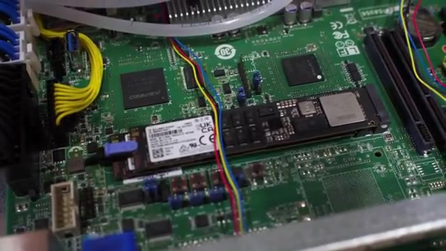
🔍 ZoomUne fois qu'on a fini d'installer tous les serveurs dans le rack qui ont été montés, qui ont été testés, on va prendre le rack et on va venir les installer ici. C'est quand même assez grand et c'est quand même assez dense. Il y a quatre allées dans ce data center. Ici, c'est l'allée dernière génération et on va installer jusqu'à 30 000 serveurs dans cette année-là. Et donc, pour l'instant, ils utilisent à peu près la moitié de l'espace, donc ils ont encore de l'espace pour l'expansion.
Interface & Outils : Matériel physique de centre de données (racks de serveurs, câblage réseau, équipements d'alimentation).
Contenu textuel & Code : Infrastructure physique de serveurs haute densité installés dans des baies de datacenter.
Action / Démonstration : Visite guidée et présentation de l'agencement matériel d'un centre de données moderne.
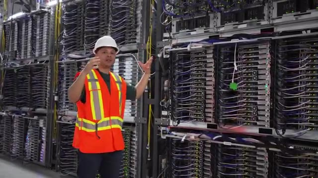
🔍 Zoom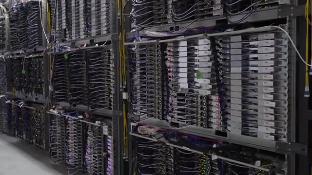
🔍 Zoom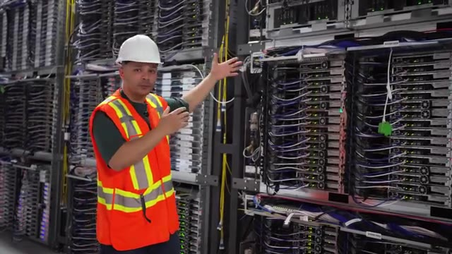
🔍 ZoomMais ils essayent aussi de s'étendre en hauteur. On voit que les serveurs vont beaucoup plus haut que dans un data center normal. Dans un data center classique, le rack irait peut-être jusqu'ici, quelque chose comme ça, alors que là, on a quand même beaucoup de serveurs en plus. Et il prévoit d'aller encore plus haut. Et en fait, il y a toute une balance entre rajouter des serveurs en hauteur ou rajouter des serveurs dans la salle, parce que le plus on va avoir de serveurs au même endroit, le plus on va avoir une bonne densité, on va avoir un meilleur prix du serveur au mètre carré, entre guillemets.
Interface & Outils : Datacenter physique, racks de serveurs haute densité, chemins de câbles aériens, câblage réseau et alimentation.
Contenu textuel & Code : Infrastructure matérielle de serveurs empilés verticalement, câbles optiques et cuivres, gestion thermique et électrique.
Action / Démonstration : Présentation physique et explication technique de l'architecture verticale des serveurs du datacenter.
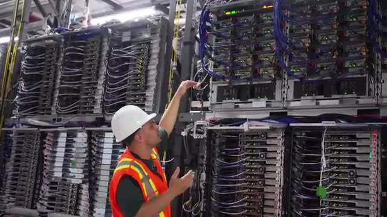
🔍 Zoom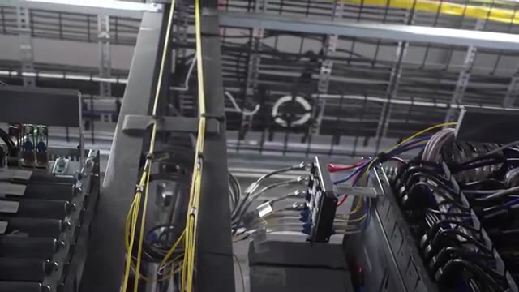
🔍 Zoom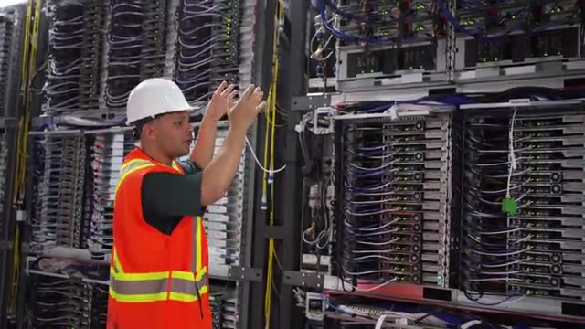
🔍 ZoomOn va aussi avoir besoin de moins d'infrastructures, d'équipements réseau, d'équipements de refroidissement, etc., parce que tout est au même endroit. Maintenant, le fait de rajouter des serveurs en hauteur, c'est plus difficile à installer, c'est plus difficile à maintenir. Au bout d'un moment, on a besoin de quipements qui sont peut-être plus chers. Donc ça fait qu'il y a cette difficile balance à trouver entre densifier en hauteur et densifier en profondeur.
Interface & Outils : Datacenter physique, racks de serveurs haute densité, chemins de câbles optiques et cuivre.
Contenu textuel & Code : Racks de serveurs empilés verticalement, câblage structuré, blocs d'alimentation et ventilateurs de serveurs visibles.
Action / Démonstration : Explication technique sur l'optimisation de l'infrastructure et la complexité de maintenance des serveurs installés en hauteur.
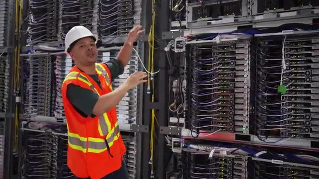
🔍 Zoom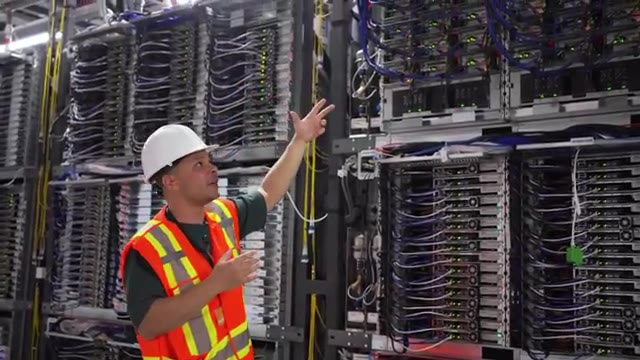
🔍 Zoom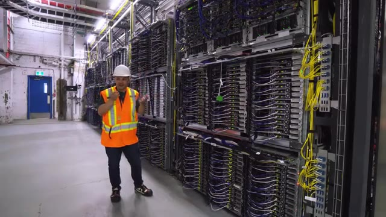
🔍 ZoomUne fois qu'on arrive et qu'on a installé nos serveurs ici, on a une double redondance en termes d'électricité et en termes de réseau. Donc du coup, on a deux câbles réseaux qui verissent deux réseaux différents pour être sûr que ça marche plus grand. Pareil pour l'électricité. Comme ici, on est dans l'année de dernière génération, c'est quand même assez rare qu'il y ait des problèmes parce que les serveurs comme on a vu avant sont déjà testés au niveau de la pression de l'eau, de la température, des composants, etc. dans la partie fabrication.
Interface & Outils : Datacenter physique, baies de serveurs rackables, gestion de câblage cuivre et fibre optique.
Contenu textuel & Code : Racks de serveurs haute densité avec voyants d'état et câblage structuré double réseau.
Action / Démonstration : Explication de l'architecture de redondance électrique et réseau (double câblage) dans une infrastructure moderne de datacenter.
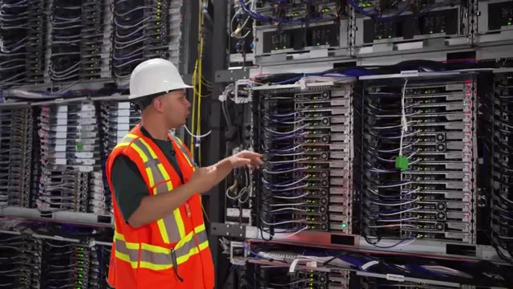
🔍 Zoom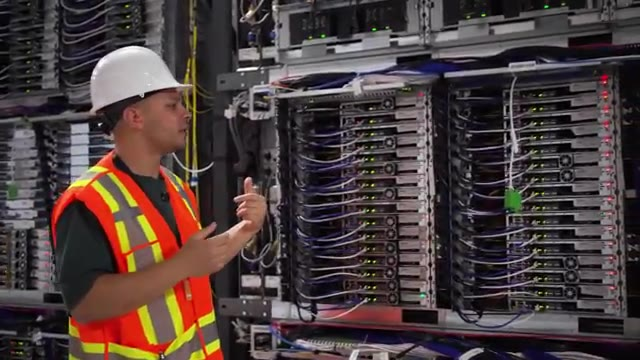
🔍 Zoom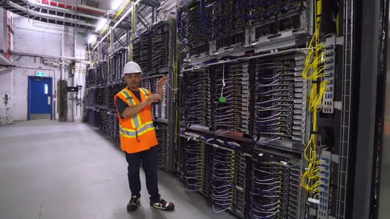
🔍 ZoomMais ils sont retestés ici une deuxième fois, une fois que l'installation est finie. Et avec le fait qu'ils font une maintenance régulière pour s'assurer que les ventilateurs sont réployés, ça fait qu'il y a assez peu de problèmes sur les serveurs qui ont utilisé. Et donc ici on est de l'autre côté des serveurs. Il y a beaucoup de vent qui passe par ici parce que c'est là où on a les ventilateurs qui vont aspirer l'air ambiant, le faire passer à travers ces radiateurs ici qui sont pleins d'eau fraîche.
Interface & Outils : Matériel de centre de données, racks de serveurs, échangeurs thermiques industriels et tuyauterie de refroidissement.
Contenu textuel & Code : Infrastructure de serveurs haute densité et systèmes de ventilation/refroidissement de datacenter.
Action / Démonstration : Explication technique des procédures de test des serveurs et de la maintenance du système de refroidissement et des ventilateurs.
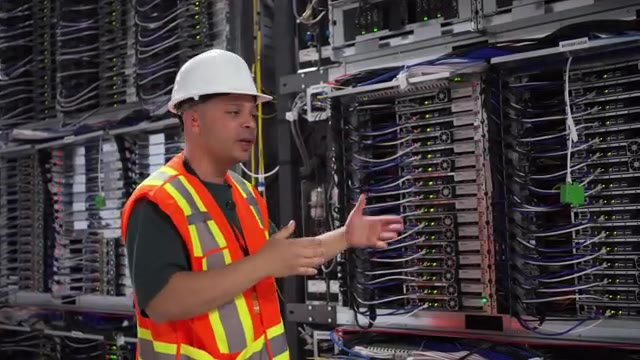
🔍 Zoom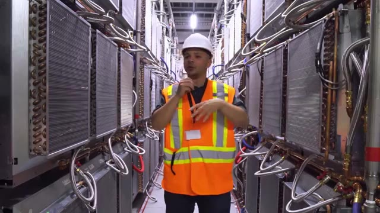
🔍 Zoom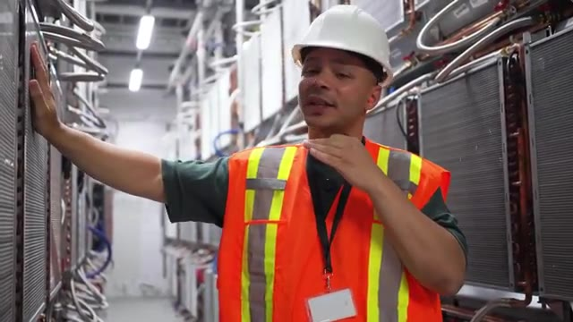
🔍 Zoomet qui vont ensuite passer dans le serveur pour refroidir passivement tous les composants qui sont autres que le CPU et le GPU, qui eux sont refroidis avec du watercooling. Et donc on a tout le circuit d'eau qui vient rafraîchir les serveurs ici, et on a aussi le circuit d'eau qui vient rafraîchir le circuit de watercooling pour les processeurs et le GPU directement à l'intérieur du serveur, comme on a vu tout à l'heure. Et donc tous les serveurs qu'on voit ici, ils sont alimentés en eau fraîche par un seul échangeur d'eau, qui va prendre l'eau et la refroidir avec un autre circuit d'eau, Et cet autre circuit d'eau, lui, est refroidi, mais cette fois à l'extérieur du bâtiment avec l'air ambiant.
Interface & Outils : Équipements industriels de refroidissement (tuyauteries, vannes, échangeurs thermiques).
Contenu textuel & Code : Infrastructure physique de refroidissement par eau (watercooling et circuits passifs) d'un datacenter.
Action / Démonstration : Explication technique de l'architecture du système de refroidissement liquide des serveurs.
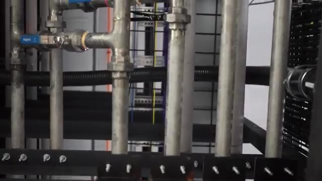
🔍 ZoomEt donc l'unité de refroidissement, elle peut refroidir jusqu'à 4 allées à la fois. Et donc on va retrouver ces systèmes de refroidissement-là à chaque fois toutes les 3 ou 4 allées. Et là où il y a un gros gain en termes d'efficacité énergétique, c'est que dans un data-sauter traditionnel, on va utiliser de la climatisation pour refroidir l'air de toute la pièce. Et ensuite, l'air de toute la pièce vient refroidir les serveurs.
Interface & Outils : Équipements physiques de refroidissement de datacenter (échangeurs de chaleur, radiateurs industriels, tuyauteries en cuivre et flexibles de distribution de fluide caloporteur).
Contenu textuel & Code : Systèmes de climatisation et de refroidissement liquide industriels conçus pour optimiser l'efficacité énergétique globale (PUE) des salles de serveurs.
Action / Démonstration : Explication technique sur site du fonctionnement des unités de refroidissement de datacenter et de leur disposition toutes les 3 ou 4 allées de serveurs.
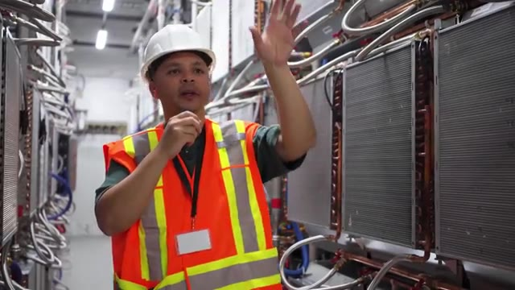
🔍 Zoom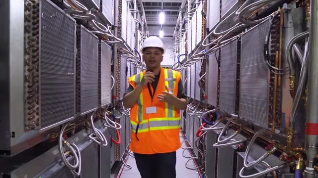
🔍 Zoom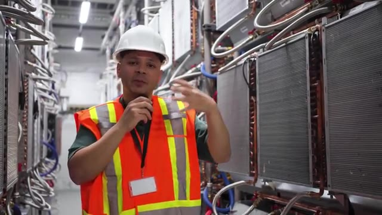
🔍 ZoomAlors que là, ce qui se passe, c'est qu'on fait tourner les machines un petit peu plus chaud que d'habitude, mais toujours largement dans les températures acceptables. on injecte l'eau fraîche pour pouvoir refroidir notre composant. Donc l'eau qui ressort est un petit peu plus chaude, donc elle a peu près à 35 degrés. Et cette eau-là, elle peut ensuite être refroidie avec l'air ambiant de l'extérieur. Et comme à l'extérieur, il fait plus frais que cette température-là, on peut refroidir les serveurs seulement en déplaçant de l'eau et sans avoir un compresseur, une climatisation ou des choses qui sont beaucoup plus énergivores.
Interface & Outils : Caméra thermique avec échelle de température (-15,0°C à 150,0°C).
Contenu textuel & Code : Thermographie infrarouge illustrant la dissipation thermique des composants serveurs et des canalisations.
Action / Démonstration : Explication technique sur l'injection d'eau fraîche, le refroidissement des composants et la gestion thermique à environ 35°C.
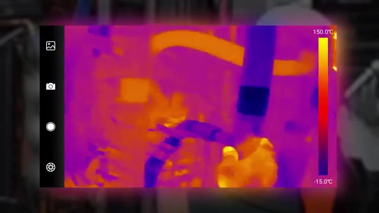
🔍 ZoomDonc ici, on est dans la salle des batteries. Et donc on va avoir toute l'énergie électrique qui va d'abord arriver dans une salle avec des UPS, qui va nettoyer le courant, faire en sorte qu'il soit bien stable, qu'il n'y a pas de trop d'interférences, juste comme ça. Et ensuite, ça va passer ici dans des batteries qui vont servir en cas de problème électrique pour pouvoir alimenter tous les serveurs le temps qu'il y a un générateur thermique qui se met en route pour pouvoir alimenter tous les serveurs.
Interface & Outils : AUCUNE
Contenu textuel & Code : AUCUNE
Action / Démonstration : Explication orale de l'infrastructure électrique et des batteries de secours du datacenter.
Et donc, elles ne sont pas vraiment utilisées en temps normal. Mais par contre, comme le CEM est doublé pour avoir de la haute disponibilité, ça a deux avantages. Le premier, c'est que si on a un problème sur une des alimentations électriques, il y a l'autre qui peut prendre le relais et continuer d'alimenter le data center. Et le deuxième avantage aussi, c'est pour la maintenance. parce que parfois on a besoin de mettre à jour des équipements, de faire de la maintenance sur des équipements, et donc on a besoin de les éteindre.
Interface & Outils : AUCUNE
Contenu textuel & Code : AUCUNE
Action / Démonstration : Explication orale de la haute disponibilité et de la redondance des alimentations électriques (onduleurs/batteries) dans un datacenter.
Sauf que les serveurs, on ne veut jamais que les éteindre, on veut que les serveurs continuent à tourner H24. Et donc le fait d'avoir ces deux alimentations électriques-là redondées, on peut en éteindre une quand on a besoin de faire de la maintenance dessus, et c'est l'autre qui va prendre le relais. Et ensuite, une fois qu'on a fini la maintenance, on vient réouvrir le courant dessus et faire la maintenance sur l'autre partie. Comme ça, on peut mettre à jour et maintenir notre installation électrique sans interrompre les serveurs qui tournent dans tout le reste du data center.
Interface & Outils : AUCUNE
Contenu textuel & Code : AUCUN
Action / Démonstration : Explication orale de la redondance électrique et de la continuité de service des serveurs en datacenter.
Et donc ici ce qui est intéressant c'est qu'on est à Beauharnais près de Montréal au Québec et c'est un endroit très très intéressant pour avoir un datacenter pour plusieurs raisons. Premièrement le climat est assez favorable la plupart du temps de l'année pour des serveurs parce qu'il se fait assez froid et comme l'eau du watercolim est refroidie avec l'air ambiant, ça nous arrange. Deuxièmement c'est très bien connecté avec toute l'Amérique du Nord et avec l'Europe parce qu'il y a des câbles qui passent directement avec l'Europe et on est aussi proche de l'exchange de New York où il y a encore plus de connexions qui vont un peu partout dans le monde.
Interface & Outils : Navigateur web affichant des cartes géographiques et des cartes de câbles sous-marins (Submarine Cable Map).
Contenu textuel & Code : Cartographie de la région de Beauharnois et routes de câbles de fibre optique transatlantiques et terrestres.
Action / Démonstration : Explication géographique et infrastructurelle des avantages de l'emplacement du datacenter (proximité de l'eau pour le refroidissement et connectivité réseau).
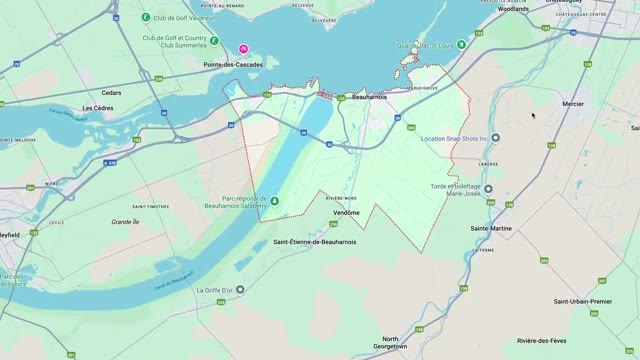
🔍 Zoom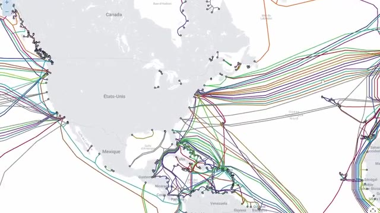
🔍 ZoomDonc en termes de latence, de débit de réseau pour un datacenter c'est très bien positionné. Et troisièmement, le data center est vraiment juste à côté d'un barrage hydroélectrique, ce qui donne plusieurs avantages. Donc premièrement, c'est de l'énergie renouvelable, ça veut dire que tous les serveurs qu'on voit dans ce data center-là sont tous alimentés par de l'énergie verte, l'énergie hydroélectrique. Deuxièmement, cette proximité, elle permet d'avoir une puissance beaucoup plus élevée que ce qu'on pourrait avoir ailleurs où on n'a pas forcément accès à de l'énergie proche.
Interface & Outils : Aucune interface logicielle ou terminal affiché.
Contenu textuel & Code : Infrastructure physique de production énergétique (barrage hydroélectrique) alimentant le datacenter.
Action / Démonstration : Explication de l'alimentation en énergie renouvelable des serveurs grâce à la proximité immédiate d'un barrage hydroélectrique.
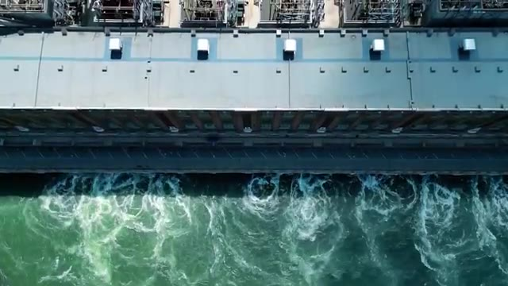
🔍 ZoomEt troisièmement, ça permet aussi d'avoir une meilleure disponibilité parce que comme on est vraiment juste à côté du barrage, il y a très peu de chances d'avoir des problèmes parce que, si tu veux, le câble est très très court. Donc il ne va pas y avoir plein d'endroits intermédiaires où un problème peut arriver. Donc une fois que notre serveur a été racké, il a été branché, etc., les clients l'utilisent, ils les commandent, tout ça pendant à peu près 9 ans, 10 ans.
Interface & Outils : AUCUNE
Contenu textuel & Code : AUCUN
Action / Démonstration : Explication orale sur la fiabilité et la haute disponibilité liée à la proximité de l'infrastructure avec la source d'énergie (le barrage).
Et après cette période-là, tous les serveurs d'Amérique du Nord, qui sont aux Etats-Unis ou qui sont au Canada, ils vont venir ici à Boarnois pour être recyclés. Donc il y a plusieurs chemins possibles qu'un vieux serveur peut avoir. Premièrement, ils vont arriver, et ensuite il y a un technicien qui va nettoyer tous les composants et les vérifier un par un pour voir lesquels fonctionnent, lesquels fonctionnent plus et lesquels fonctionnent mais ne sont pas forcément aux normes que OVH a besoin pour ces nouveaux serveurs.
Interface & Outils : Établi de technicien, écran de contrôle, bacs de tri de composants et outils de diagnostic
Contenu textuel & Code : Composants matériels informatiques en cours de tri (cartes mères, barrettes de RAM, câblerie)
Action / Démonstration : Explication du processus de nettoyage, de vérification et de tri des composants matériels des serveurs reçus
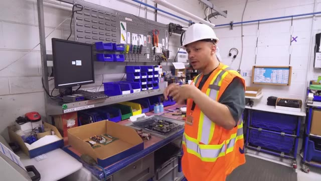
🔍 ZoomEt ensuite, chacun de ces composants, donc ça peut être des cartes mères, ça peut être des CPU, ça peut être des barrettes de RAM, ça peut être des câbles, et des composants qui sont juste trop vieux, qu'on ne peut pas réutiliser, donc on va juste les recycler. Mais si c'est des composants qu'on peut réutiliser sur des serveurs d'entrée de gamme, ça permet de prolonger la durée de vie du matériel, de proposer des solutions qui sont un petit peu moins chères, plus abordables pour un autre type de clientèle.
Interface & Outils : AUCUNE
Contenu textuel & Code : AUCUNE
Action / Démonstration : Explication orale du processus de tri, de recyclage et de réutilisation des composants matériels informatiques (cartes mères, RAM, CPU).
Donc c'est gagnant pour tout le monde. Pour ce qui est des composants qui sont réutilisables, on va les tester avant de les réutiliser pour être sûr qu'ils fonctionnent bien. Et donc, on a tous des systèmes vraiment maison de chez OVH pour pouvoir s'assurer que tout fonctionne bien. Donc premièrement, pour les disques durs, là ici on voit qu'on a des SSD en SATA. Ici on a des disques durs 2 Tera, comme vous voulez savoir.
Interface & Outils : Infrastructures de datacenters physiques, baies de serveurs racks, matériel de test d'OVH.
Contenu textuel & Code : Racks de serveurs, câblage réseau, étiquettes de zone (ZONE PCC).
Action / Démonstration : Explication du processus de test et de réutilisation des composants matériels (disques durs, serveurs) dans les installations d'OVH.
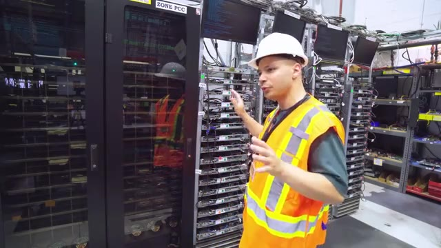
🔍 Zoom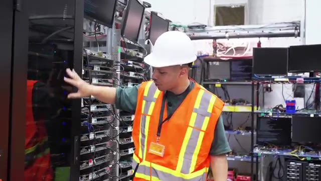
🔍 ZoomEt donc, ils sont mis dans des systèmes ici qui vont avoir des scripts qui vont tourner, qui vont automatiquement effacer les disques durs pour pouvoir être ensuite réutilisés. Et s'ils sont réutilisés à l'interne chez OVH dans des serveurs, parce qu'ils fonctionnent assez bien et qu'ils ont assez de performance pour pouvoir être réutilisés dans des nouveaux serveurs, ils vont être effacés trois fois d'affilée pour être sûrs qu'il n'y a aucune chance qu'ils puissent récupérer des données.
Interface & Outils : Écrans de contrôle et terminaux embarqués sur racks de serveurs.
Contenu textuel & Code : Lignes de codes et interfaces de monitoring système affichées sur les écrans en hauteur.
Action / Démonstration : Présentation physique de l'infrastructure de recyclage et de test des disques durs en datacenter.
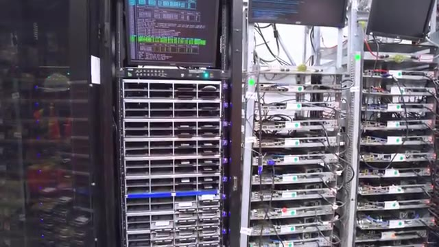
🔍 ZoomSi par contre, ils fonctionnent, mais par exemple, ils sont un peu trop vieux, si c'est des disques de juste 1 Tera ou 500 Giga, qu'on ne peut pas réutiliser dans des nouveaux serveurs parce que ce n'est juste pas assez performant, mais qu'ils fonctionnent quand même bien et qu'il y avait d'autres gens qui pourraient en bénéficier, ces disques-là sont revendus à des brokers qui vont ensuite les revendre ou les réutiliser. Et dans ce cas-là, quand ça sort d'OVH, là elles sont effacées 7 fois pour être sûr que vraiment là, c'est garanti que jamais de la vie il y a un seul octet qui va sortir de ces disques durs.
Interface & Outils : AUCUNE
Contenu textuel & Code : AUCUNE
Action / Démonstration : Explication orale sur le réemploi de disques durs de plus faible capacité dans un contexte de gestion de datacenter.
Et donc tout ça c'est automatisé dans cette Béla, comme ça on peut mettre tous les disques durs et les effacer tous en même temps. Et ici on a la même chose mais pour les barrettes de RAM. Donc les barrettes de RAM on n'a pas besoin de les effacer évidemment, mais on a besoin de s'assurer qu'elles fonctionnent. Et pour ça pareil on a besoin d'une machine qui va écrire dessus un certain nombre de fois, lire dessus un certain nombre de fois pour s'assurer que tout l'espace mémoire de la barrette fonctionne correctement, fonctionne à la bonne vitesse.
Interface & Outils : Aucune interface ou console affichée.
Contenu textuel & Code : Aucun code, commande ou métrique visible.
Action / Démonstration : Explication orale sur le matériel de test de disques durs et de barrettes de RAM.
et la même manière si la barrette est réutilisable on va la retrouver dans des serveurs qui vont être remis ensuite dans le data center si jamais c'est peut-être un peu trop vieux par exemple c'est de la DDR3 qui est plus vraiment utilisé dans les gammes OVH et bien là pareil ça va être revendu à des brokers qui eux pourront potentiellement les réutiliser et pareil tous ces châssis ici sont tout fait custom par OVH et on voit même ici qu'on a le water cooling parce que c'est les cartes meilleures d'OVH avec le water block custom d'OVH donc tout est fait custom donc si les disques qui remarchent s'ils ne sont pas super performants ils sont revendus Si par contre ils marchent bien et qu'ils sont assez performants, on les réutilise. Si par contre
Interface & Outils : Baies de serveurs de datacenter, racks d'infrastructure matérielle.
Contenu textuel & Code : Racks de serveurs montés en rack avec câblage réseau et matériel informatique visible en arrière-plan.
Action / Démonstration : Explication technique sur la réutilisation des composants matériels (serveurs et barrettes mémoire) dans le data center ou leur revente à des brokers.
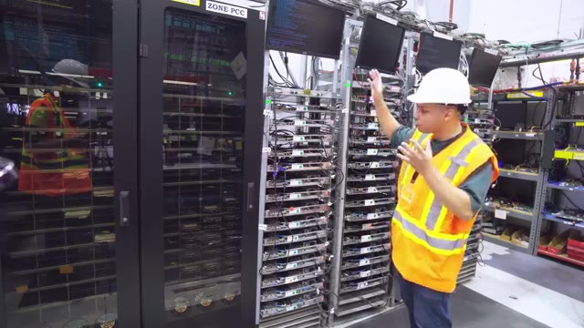
🔍 Zoomils marchent plus du tout ou que le client a décidé qu'on ne veut pas réutiliser ces disques dans aucun cas possible, ils vont être détruits, détruits physiquement. Non seulement ils vont être effacés cette fois dans les machines qu'on a vu là-bas, mais ensuite ils vont être broyés dans cette machine ici. Et donc le disque qui rentre ici, il est déchiqueté, broyé, explosé et il finit par ressembler à ça, de la poudre de SSD et de disque dur. Donc là on est dans la salle
Interface & Outils : Machine physique de broyage / destruction de disques durs (hard drive shredder).
Contenu textuel & Code : Dispositif industriel de destruction de supports de stockage (disques durs HDD/SSD).
Action / Démonstration : Démonstration du processus de broyage physique des disques durs pour garantir une destruction définitive et sécurisée des données.
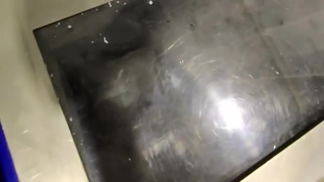
🔍 Zoomde contrôle où on va gérer tous les incidents qu'il peut y avoir. Donc il y a deux types d'intervention qu'il peut faire. Le premier type d'intervention ça va être des choses qui sont préventives comme par exemple répondre à des demandes clients, faire des nettoyages préventifs des machines, des choses comme ça. Et le deuxième type d'intervention ça va être plus en réaction à des problèmes qui peuvent arriver. Ça peut être des problèmes matériels ou ça peut aussi être des demandes des clients qui ont un problème avec leur machine qui n'est pas forcément matérielle.
Interface & Outils : Écrans muraux de type salle de contrôle (Monitoring / NOC).
Contenu textuel & Code : Tableaux de bord et métriques de supervision affichés sur les écrans muraux d'une salle de contrôle (NOC).
Action / Démonstration : Explication orale des processus d'intervention préventive et corrective dans une salle de contrôle.
Si par exemple quelqu'un configure mal sa machine et perd l'accès parce qu'il a mal configuré un firewall ou parce qu'il a cassé son système d'exploitation, ce n'est pas un problème qui qui est physique, mais il peut quand même contacter le support pour pouvoir aller manuellement redémarrer la machine s'il y a besoin ou la démarrer en mode secours pour pouvoir essayer de récupérer ses données, remettre le système d'exploitation en état de fonctionner.
Interface & Outils : Écrans de contrôle muraux et affichages de supervision (inutilisables ou trop lointains pour être analysés techniquement).
Contenu textuel & Code : Aucun contenu technique (commandes, code ou métriques) n'est lisible sur ces plans.
Action / Démonstration : Explication orale de concepts d'administration système (erreurs de configuration réseau, pare-feu, mode secours).
Donc ici, on a pas mal de dashboards pour pouvoir surveiller tout ce qui se passe dans le data center, dans tous les différents endroits dans le data center. On surveille les températures, on surveille la météo, on surveille le nombre de machines qui sont en cours d'installation ou qu'on a besoin d'installer, et on surveille évidemment les machines qui ont un problème en ce moment. Là, on voit par exemple qu'en ce moment, Dans le data center, on a une machine qui a un problème et apparemment, c'est un problème de carte mère qui bug.
Interface & Outils : Tableaux de bord de supervision (NOC), écrans muraux multiples, interface de monitoring des déploiements matériels.
Contenu textuel & Code : Métriques de suivi des installations de serveurs, compteurs chiffrés d'état du parc de machines du data center.
Action / Démonstration : Explication et présentation des outils de supervision et des tableaux de bord de surveillance du data center.
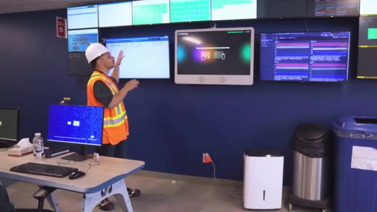
🔍 Zoom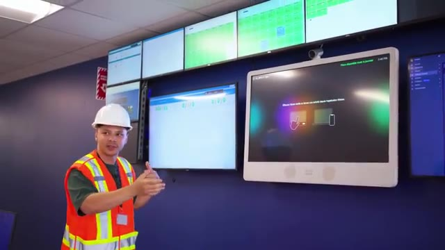
🔍 Zoom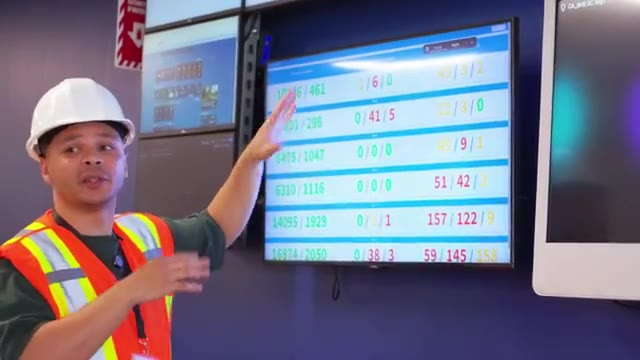
🔍 ZoomDonc, quand on détecte ce problème, les techniciens ici, ils vont pouvoir diagnostiquer, essayer de voir à distance qu'est-ce qui se passe. S'ils peuvent régler le problème à distance, ils vont le faire. Sinon, on va devoir aller physiquement sur la machine pour pouvoir changer le matériel si jamais il y a besoin. Et le chiffre au milieu, en rouge, qu'on voit, c'est le nombre d'interventions planifiées qui restent à faire. Donc, comme je l'ai dit, ça peut être des clients qui demandent à changer le disque dur ou qui demandent à ce qu'on a manuellement rebooter leurs machines ou des choses comme ça. On a aussi la météo qu'on surveille parce que avec le refroidissement liquide cette eau elle est refroidie avec l'air ambiant et donc du coup la météo affecte la température de l'eau qu'on va utiliser pour refroidir les serveurs. Donc c'est
Interface & Outils : Tableaux de bord de supervision / monitoring affichés sur des écrans muraux de type NOC (Network Operations Center).
Contenu textuel & Code : Lignes de métriques et de statuts comportant des compteurs chiffrés avec des indicateurs colorés (vert, rouge, bleu).
Action / Démonstration : Explication du processus de détection et de diagnostic à distance des anomalies par les équipes techniques.
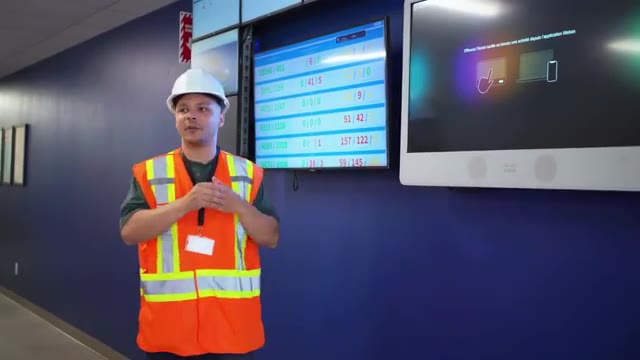
🔍 Zoompour ça qu'on essaie de surveiller la température. Tant que la température est assez stable ça va, mais c'est plus quand il y a des grosses variations dans la journée ou si par exemple il y a des prévisions d'orage qui pourraient potentiellement affecter l'alimentation électrique du coup on garde un oeil là dessus pour pouvoir s'assurer que tout va bien. Merci OVH pour m'avoir laissé balader dans leur data center. Et au passage ils viennent de lancer une toute nouvelle gamme de VPS avec un super bon rapport performance prix. Je pense ça va t'intéresser donc je te mets le lien en bas. Donc maintenant que tu connais mieux le côté matériel, pour savoir comment mettre en place une infrastructure solide avec ses serveurs, il faut que tu ailles voir cette vidéo.
Interface & Outils : Présentation ou face-caméra sans interface informatique partagée.
Contenu textuel & Code : Explications orales des concepts, architectures et retours d'expérience.
Action / Démonstration : Démonstration pédagogique et mise en perspective technique.